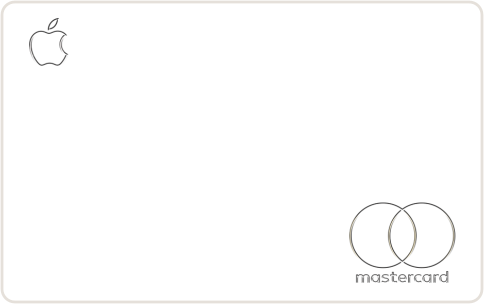

Project Notes
How We Built This
이 페이지는 긴 문서를 한 번에 쏟아놓지 않고, 스크롤하면서 단계별로 이해할 수 있도록 다시 설계했습니다. 메인 랜딩 페이지와 같은 톤을 유지하면서 작업 흐름만 더 천천히 보여줍니다.

먼저 보는 법부터 맞췄습니다.
원본을 그냥 "예쁘다"로 지나가지 않고, 카드 비율, 헤드라인 크기, 고정 레이아웃, 스크롤 흐름처럼 구현에 바로 연결되는 정보로 해체했습니다.
느낌을 문서로 번역했습니다.
"애플 같다" 같은 인상만으로는 구현이 어렵기 때문에, PRD 안에서 수치와 규칙으로 다시 정리했습니다. 그래서 만들 때도, 고칠 때도 기준이 생겼습니다.
단일 파일로 빠르게 만들었습니다.
구현은 index.html 하나로 묶어서 비교 속도를 높였습니다.
구조가 단순할수록 눈으로 확인하고 다시 조정하기가 쉬웠습니다.
어디가 다른지 언어로 잡았습니다.
가장 중요한 순간은 비교 단계였습니다. 단순히 다르다고 느끼는 대신, 어느 구간에서 어떤 요소가 먼저 나오고 무엇이 어색한지를 구체적으로 짚었습니다.
마지막엔 기법까지 바꿨습니다.
카드가 화면에서 카드 형태로 수렴하는 장면은 transform보다
clip-path: inset()이 훨씬 자연스러웠습니다. 핵심 경험을 맞추기 위해
표현 방식 자체를 다시 선택했습니다.
One Experience
Same system, slower storytelling.
이번 수정에서는 폰트를 프리텐다드로 통일하고, 한 화면에 너무 많은 정보를 두지 않도록 전체 구조를 스크롤형 단계 카드로 다시 만들었습니다. 이제 이 페이지는 읽는 문서보다 따라가는 화면에 더 가깝습니다.
Open Landing Page